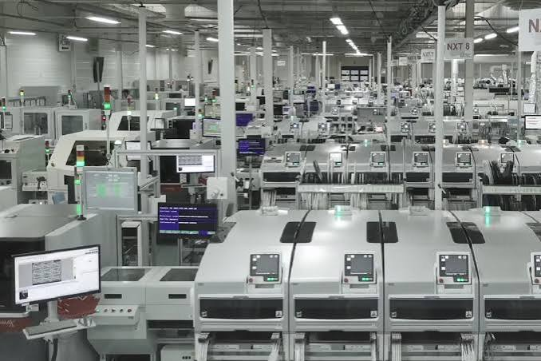

Bonjour et bienvenue sur la page de mes projets
Voici les différents projets que j'ai réalisés au cours de ma scolarité et de mes expériences professionnelles.
Mes projets
🔧 Projet 1 — Stage en entreprise d'électronique
Année : Seconde
Objectif : découvrir le fonctionnement d'une entreprise spécialisée dans l'électronique et découvrir le monde professionnel.
Description : Lors de mon stage en seconde, j'ai découvert le fonctionnement d'une entreprise spécialisée dans l'électronique. J'ai pu observer différentes activités liées à l'électronique et découvrir l'environnement professionnel.
Matériel utilisé : composants électroniques, circuits électriques, outils de mesure et matériel électronique.

Photo ou capture de mon stage / matériel électronique.
Projet 2 — Amplificateur pour téléphone
Année : Première
Objectif : réaliser un système permettant d'augmenter le volume sonore d'un téléphone.
Description : Dans le cadre d'un projet scolaire, j'ai réalisé un amplificateur pour téléphone. Le but était de concevoir un montage permettant d'amplifier le signal audio provenant du téléphone afin d'obtenir un son plus fort.
Technologies et matériel : composants électroniques, haut-parleur, câbles, alimentation et circuit électronique.

Projet 3 — Création de mon site personnel
Année : Projet personnel / scolaire
Objectif : créer un site internet permettant de présenter mon parcours, mes compétences et mes différents projets.
Description : J'ai créé ce site internet afin de mettre en pratique mes connaissances en développement web. Le site est composé de plusieurs pages permettant de présenter mon parcours, mes compétences, mes contacts et mes projets.
Technologies : HTML, CSS et W3.CSS.
Voir le projet